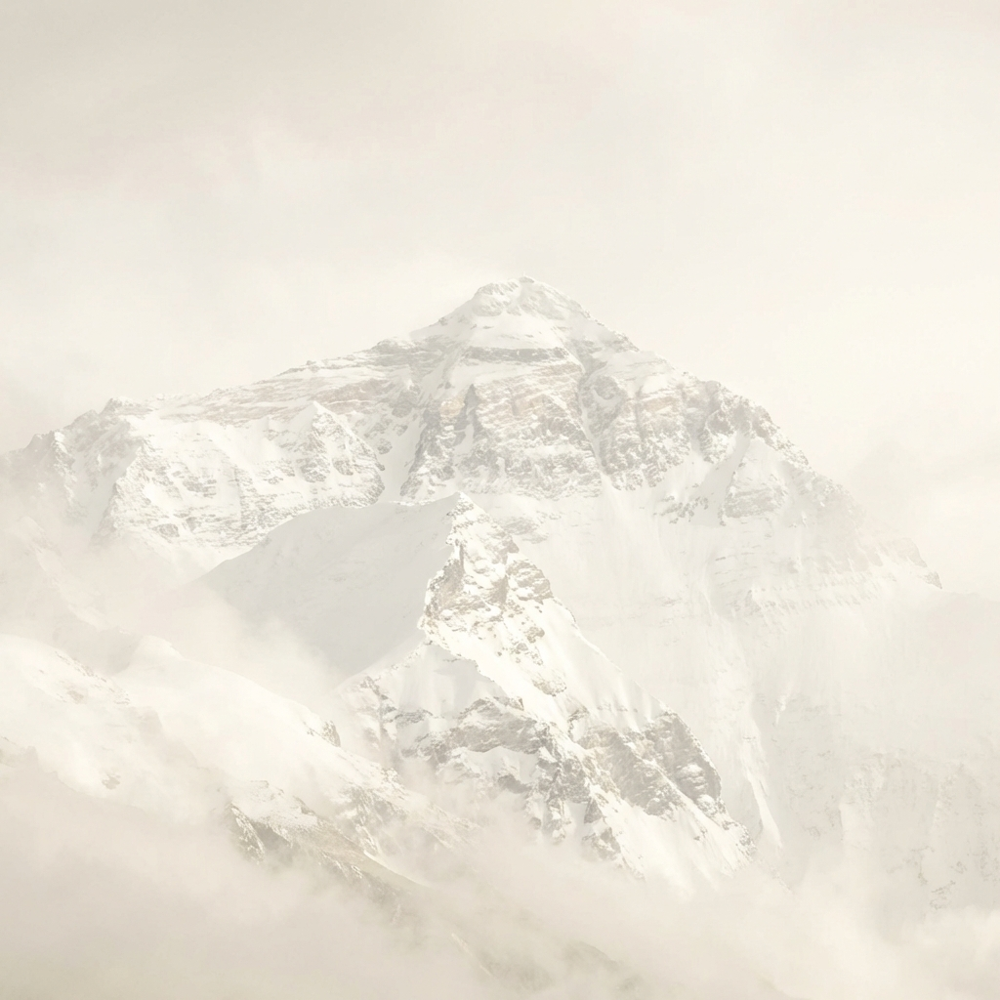
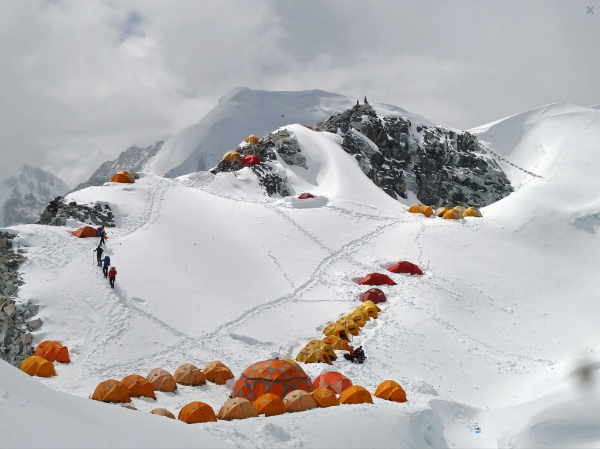
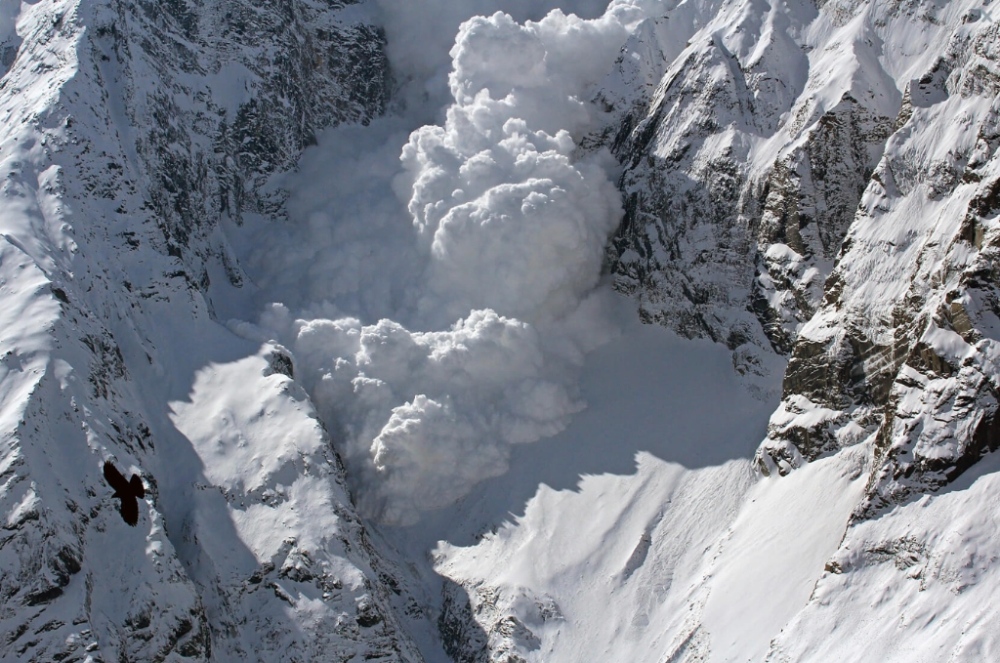
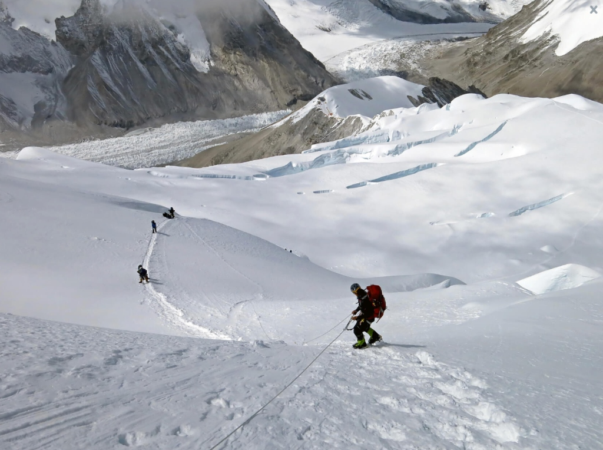
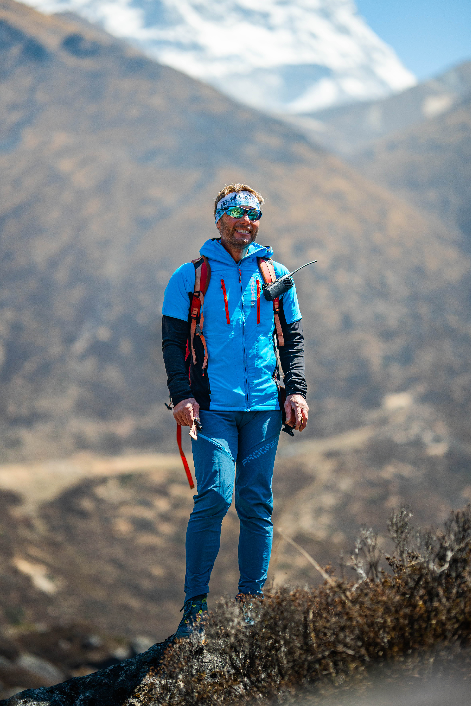

Poutník mezi světy
HONZA
TRÁVNÍČEK

Base Camp — 5364 m
Nehraju si na
hrdinu.
Jsem geodet, učitel a manažer punkový kapely, co se zamiloval do řídkýho vzduchu. Říkají o mně, že jsem horolezec. Já se cítím spíš jako poutník.
Můj celý příběh
Icefall — 6400 m
Tanec na ostří
ledu.
Každý krok může být poslední. Trhliny se mění každou vteřinu. Tady hory dýchají, a my musíme dýchat s nimi.


Přístupový tábor — 7000 m
Každý výstup
začíná
uvnitř.
Tisíce metrů pod vrcholem si člověk nevybírá jen cestu — vybírá si, jestli má dost důvodů pokračovat. Já jsem si vybral pětadvacet let znovu a znovu.
Expedice & projekty
Tým — Lobuje East 6119 m
Hory tě naučí důvěřovat.
Bez týmu se na osmitisícovku nedostaneš. Každý šerpa, každý partner na laně — dohromady jeden organismus, jeden dech.

Tam, kde vzduch přestane existovat — začneš ty.
Vrchol Everestu je jen začátek. Každý krok zpátky dolů je triumf. Každý nádech je dar. Setkej se s Honzou — poutníkem, který ti ukáže cestu.
Kontaktuj Honzu